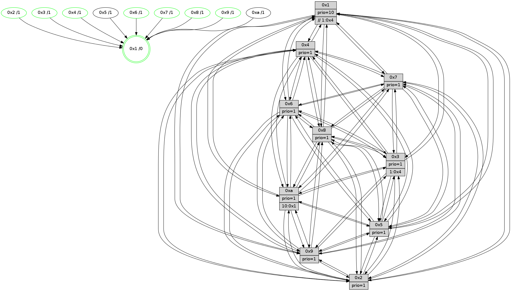

>> << IDX [start] -100 -25 -5 +0 +5 +25 +100 [1040.00335002]
 Previous packets
----------------------------------------------------------------------
1035.244577 beacon01(faad) #0 coord=01,02,03,04,05,06,07,0a,09,08 cycle=688.0ms assoc
-- color-indic=1 64 bd f6
1035.254559 beacon02(faad) #0 coord=01,02,03,04,05,06,07,0a,09,08 cycle=688.0ms assoc 64 2e c7
1035.264559 beacon03(faad) #0 coord=01,02,03,04,05,06,07,0a,09,08 cycle=688.0ms assoc 64 54 8a
1035.274562 beacon04(faad) #0 coord=01,02,03,04,05,06,07,0a,09,08 cycle=688.0ms assoc 64 23 60
1035.284561 beacon05(faad) #0 coord=01,02,03,04,05,06,07,0a,09,08 cycle=688.0ms assoc 64 59 2d
1035.294561 beacon06(faad) #0 coord=01,02,03,04,05,06,07,0a,09,08 cycle=688.0ms assoc 64 d7 fa
1035.304564 beacon07(faad) #0 coord=01,02,03,04,05,06,07,0a,09,08 cycle=688.0ms assoc 64 ad b7
1035.314566 beacon0a(faad) #0 coord=01,02,03,04,05,06,07,0a,09,08 cycle=688.0ms assoc 64 dc bc
1035.324566 beacon09(faad) #0 coord=01,02,03,04,05,06,07,0a,09,08 cycle=688.0ms assoc 64 52 6b
1035.334566 beacon08(faad) #0 coord=01,02,03,04,05,06,07,0a,09,08 cycle=688.0ms assoc 64 28 26
1035.346056 [Hello(7): seq=661 sym=2,3,5,6,4,8,9,10,1 sysInfo=hasWarning stat=2:14,3,12,14/3:9,6,8,13/5:9,4,11,1/6:11,7,8,7/4:11,0,3,2/8:1,12,6,1/9:11,7,8,0/10:14,3,12,3/1:7,13,10,0]
1035.350173 [Hello(4): seq=661 sym=5,7,6,2,3,9,8,10,1 sysInfo= stat=5:6,10,3,13/7:3,8,3,9/6:5,2,1,10/2:8,9,14,11/3:11,0,0,9/9:15,15,9,9/8:6,6,7,4/10:14,15,10,11/1:0,3,9,1]
1035.354611 [Color(4) seq=241 @0:0 prio=1]
1035.356291 [Hello(8): seq=605 sym=5,2,3,4,9,6,7,10,1 sysInfo=hasWarning stat=5:10,12,10,15/2:11,6,3,6/3:8,8,6,13/4:4,7,0,9/9:1,15,9,2/6:13,15,6,11/7:14,5,7,2/10:10,8,11,2/1:15,10,7,0]
1035.358957 [Color(1) seq=342 @0:0 prio=10 >>1.@4,1.@6,1.@7]
1035.361370 [Hello(10): seq=594 sym=6,2,3,8,7,5,9,4,1 sysInfo=hasWarning stat=6:14,15,8,4/2:0,1,15,6/3:8,8,14,9/8:2,5,2,0/7:15,3,7,3/5:6,5,9,13/9:2,12,9,1/4:9,8,9,8/1:14,4,14,1]
----------------------------------------------------------------------
1036.032708 beacon01(faad) #0 coord=01,02,03,04,05,06,07,0a,09,08 cycle=688.0ms assoc
-- color-indic=1 64 89 ee
1036.042692 beacon02(faad) #0 coord=01,02,03,04,05,06,07,0a,09,08 cycle=688.0ms assoc 64 1a df
1036.052691 beacon03(faad) #0 coord=01,02,03,04,05,06,07,0a,09,08 cycle=688.0ms assoc 64 60 92
1036.062690 beacon04(faad) #0 coord=01,02,03,04,05,06,07,0a,09,08 cycle=688.0ms assoc 64 17 78
1036.072691 beacon05(faad) #0 coord=01,02,03,04,05,06,07,0a,09,08 cycle=688.0ms assoc 64 6d 35
1036.082691 beacon06(faad) #0 coord=01,02,03,04,05,06,07,0a,09,08 cycle=688.0ms assoc 64 e3 e2
1036.092692 beacon07(faad) #0 coord=01,02,03,04,05,06,07,0a,09,08 cycle=688.0ms assoc 64 99 af
1036.102698 beacon0a(faad) #0 coord=01,02,03,04,05,06,07,0a,09,08 cycle=688.0ms assoc 64 e8 a4
1036.112697 beacon09(faad) #0 coord=01,02,03,04,05,06,07,0a,09,08 cycle=688.0ms assoc 64 66 73
1036.122697 beacon08(faad) #0 coord=01,02,03,04,05,06,07,0a,09,08 cycle=688.0ms assoc 64 1c 3e
1036.134180 [Hello(5): seq=662 sym=7,6,4,3,1,9,8,10,2 sysInfo=hasWarning stat=7:0,6,11,11/6:15,12,11,0/4:0,7,6,10/3:14,11,0,11/1:7,2,11,1/9:12,10,6,6/8:0,6,3,0/10:8,6,15,6/2:1,9,5,2]
1036.137835 [Hello(2): seq=658 sym=4,5,7,6,3,9,8,10,1 sysInfo=hasWarning stat=4:12,5,10,8/5:10,13,12,3/7:10,8,9,10/6:12,0,0,9/3:8,2,15,6/9:3,3,3,5/8:12,15,12,9/10:1,9,3,10/1:2,4,9,1]
1036.142009 [Color(8) seq=284 @0:0 prio=1]
1036.143495 [Hello(1): seq=571 sym=4,2,9,5,10,3,8,6,7 sysInfo=coloring-mode-on,ColoringModeRequestCalled stat=4:0,11,6,2/2:13,6,5,13/9:9,1,4,6/5:0,9,13,6/10:2,15,6,4/3:6,11,9,4/8:1,0,5,1/6:3,11,5,11/7:7,3,5,12]
1036.146248 [Hello(3): seq=662 sym=1,7,6,2,4,8,9,10,5 asym= sysInfo=hasWarning stat=1:14,5,4,0/7:12,4,13,9/6:6,7,14,3/2:4,12,0,12/4:4,10,4,9/8:13,4,14,2/9:12,12,2,12/10:12,13,0,3/5:4,3,9,13]
1036.149075 [Color(3) seq=291 @0:0 prio=1 >1.@4,1.@9,1.@a]
1036.153762 [Hello(6): seq=662 sym=2,3,5,4,7,9,8,10,1 sysInfo= stat=2:10,10,4,2/3:7,2,6,10/5:15,1,4,15/4:2,3,13,3/7:7,2,5,8/9:4,5,5,6/8:0,15,2,3/10:2,10,9,12/1:0,13,9,1]
1036.158808 [Color(6) seq=294 @0:0 prio=1]
----------------------------------------------------------------------
1036.820839 beacon01(faad) #0 coord=01,02,03,04,05,06,07,0a,09,08 cycle=688.0ms assoc
-- color-indic=1 64 35 eb
1036.830822 beacon02(faad) #0 coord=01,02,03,04,05,06,07,0a,09,08 cycle=688.0ms assoc 64 a6 da
1036.840821 beacon03(faad) #0 coord=01,02,03,04,05,06,07,0a,09,08 cycle=688.0ms assoc 64 dc 97
1036.850821 beacon04(faad) #0 coord=01,02,03,04,05,06,07,0a,09,08 cycle=688.0ms assoc 64 ab 7d
1036.860821 beacon05(faad) #0 coord=01,02,03,04,05,06,07,0a,09,08 cycle=688.0ms assoc 64 d1 30
1036.870823 beacon06(faad) #0 coord=01,02,03,04,05,06,07,0a,09,08 cycle=688.0ms assoc 64 5f e7
1036.880823 beacon07(faad) #0 coord=01,02,03,04,05,06,07,0a,09,08 cycle=688.0ms assoc 64 25 aa
1036.890828 beacon0a(faad) #0 coord=01,02,03,04,05,06,07,0a,09,08 cycle=688.0ms assoc 64 54 a1
1036.900827 beacon09(faad) #0 coord=01,02,03,04,05,06,07,0a,09,08 cycle=688.0ms assoc 64 da 76
1036.910828 beacon08(faad) #0 coord=01,02,03,04,05,06,07,0a,09,08 cycle=688.0ms assoc 64 a0 3b
1036.921999 [Hello(7): seq=662 sym=2,3,5,6,4,8,9,10,1 sysInfo=hasWarning stat=2:15,3,12,14/3:10,7,8,13/5:10,4,11,1/6:12,8,8,7/4:12,1,3,2/8:2,13,6,1/9:11,7,8,0/10:15,3,12,3/1:8,14,10,0]
1036.925635 [Hello(9): seq=606 sym=2,5,3,4,7,6,8,10,1 sysInfo=hasWarning stat=2:14,12,3,4/5:4,12,1,4/3:15,3,3,13/4:2,7,13,8/7:12,15,2,10/6:0,15,11,9/8:14,15,5,3/10:3,10,5,2/1:4,4,10,1]
1036.928856 [Hello(10): seq=595 sym=6,2,3,8,7,5,9,4,1 sysInfo=hasWarning stat=6:15,0,8,4/2:1,1,15,6/3:9,9,14,9/8:2,6,2,0/7:15,3,7,3/5:7,5,9,13/9:2,12,9,1/4:9,8,9,8/1:15,4,14,1]
1036.933848 [Hello(8): seq=606 sym=5,2,3,4,9,6,7,10,1 sysInfo=hasWarning stat=5:11,12,10,15/2:11,6,3,6/3:9,9,6,13/4:4,7,0,9/9:1,15,9,2/6:14,0,6,11/7:14,5,7,2/10:11,8,11,2/1:0,11,7,0]
1036.939831 [Hello(4): seq=662 sym=5,7,6,2,3,9,8,10,1 sysInfo= stat=5:7,10,3,13/7:3,8,3,9/6:6,3,1,10/2:9,9,14,11/3:12,1,0,9/9:0,15,9,9/8:7,7,7,4/10:15,15,10,11/1:1,4,9,1]
1036.944902 [Color(4) seq=242 @0:0 prio=1]
----------------------------------------------------------------------
1037.608971 beacon01(faad) #0 coord=01,02,03,04,05,06,07,0a,09,08 cycle=688.0ms assoc
-- color-indic=1 64 f1 e5
1037.618955 beacon02(faad) #0 coord=01,02,03,04,05,06,07,0a,09,08 cycle=688.0ms assoc 64 62 d4
1037.628956 beacon03(faad) #0 coord=01,02,03,04,05,06,07,0a,09,08 cycle=688.0ms assoc 64 18 99
1037.638954 beacon04(faad) #0 coord=01,02,03,04,05,06,07,0a,09,08 cycle=688.0ms assoc 64 6f 73
1037.648954 beacon05(faad) #0 coord=01,02,03,04,05,06,07,0a,09,08 cycle=688.0ms assoc 64 15 3e
1037.658954 beacon06(faad) #0 coord=01,02,03,04,05,06,07,0a,09,08 cycle=688.0ms assoc 64 9b e9
1037.668954 beacon07(faad) #0 coord=01,02,03,04,05,06,07,0a,09,08 cycle=688.0ms assoc 64 e1 a4
1037.678962 beacon0a(faad) #0 coord=01,02,03,04,05,06,07,0a,09,08 cycle=688.0ms assoc 64 90 af
1037.688959 beacon09(faad) #0 coord=01,02,03,04,05,06,07,0a,09,08 cycle=688.0ms assoc 64 1e 78
1037.698959 beacon08(faad) #0 coord=01,02,03,04,05,06,07,0a,09,08 cycle=688.0ms assoc 64 64 35
1037.710124 [Hello(5): seq=663 sym=7,6,4,3,1,9,8,10,2 sysInfo=hasWarning stat=7:1,6,11,11/6:0,13,11,0/4:1,8,6,10/3:15,12,0,11/1:8,2,11,1/9:13,10,6,6/8:1,7,3,0/10:9,6,15,6/2:2,9,5,2]
1037.713196 [Hello(1): seq=572 sym=4,2,9,5,10,3,8,6,7 sysInfo=coloring-mode-on,ColoringModeRequestCalled stat=4:1,12,6,2/2:13,6,5,13/9:9,1,4,6/5:0,9,13,6/10:3,15,6,4/3:7,12,9,4/8:2,0,5,1/6:4,12,5,11/7:8,3,5,12]
1037.718728 [Hello(2): seq=659 sym=4,5,7,6,3,9,8,10,1 sysInfo=hasWarning stat=4:13,6,10,8/5:10,13,12,3/7:11,8,9,10/6:13,1,0,9/3:9,3,15,6/9:4,3,3,5/8:13,0,12,9/10:2,9,3,10/1:3,4,9,1]
1037.722985 [STC(1) #0.148 tree-change,inconsistent-stability,stable,to-color d=0]
1037.724756 [Color(6) seq=295 @0:0 prio=1]
1037.727342 [Color(3) seq=292 @0:0 prio=1 >1.@4,1.@9,1.@a]
1037.735650 [Color(8) seq=285 @0:0 prio=1]
----------------------------------------------------------------------
1038.397103 beacon01(faad) #0 coord=01,02,03,04,05,06,07,0a,09,08 cycle=688.0ms assoc
-- color-indic=1 64 4d e0
1038.407087 beacon02(faad) #0 coord=01,02,03,04,05,06,07,0a,09,08 cycle=688.0ms assoc 64 de d1
1038.417085 beacon03(faad) #0 coord=01,02,03,04,05,06,07,0a,09,08 cycle=688.0ms assoc 64 a4 9c
1038.427085 beacon04(faad) #0 coord=01,02,03,04,05,06,07,0a,09,08 cycle=688.0ms assoc 64 d3 76
1038.437085 beacon05(faad) #0 coord=01,02,03,04,05,06,07,0a,09,08 cycle=688.0ms assoc 64 a9 3b
1038.447087 beacon06(faad) #0 coord=01,02,03,04,05,06,07,0a,09,08 cycle=688.0ms assoc 64 27 ec
1038.457086 beacon07(faad) #0 coord=01,02,03,04,05,06,07,0a,09,08 cycle=688.0ms assoc 64 5d a1
1038.467090 beacon0a(faad) #0 coord=01,02,03,04,05,06,07,0a,09,08 cycle=688.0ms assoc 64 2c aa
1038.477091 beacon09(faad) #0 coord=01,02,03,04,05,06,07,0a,09,08 cycle=688.0ms assoc 64 a2 7d
1038.487091 beacon08(faad) #0 coord=01,02,03,04,05,06,07,0a,09,08 cycle=688.0ms assoc 64 d8 30
1038.498653 [STC(5)->1 #0.148 tree-change,inconsistent-stability,to-color d=1]
1038.500609 [STC(2)->1 #0.148 tree-change,inconsistent-stability,stable,to-color d=1]
1038.502191 [Hello(9): seq=607 sym=2,5,3,4,7,6,8,10,1 sysInfo=hasWarning stat=2:15,12,3,4/5:5,12,1,4/3:0,4,3,13/4:3,8,13,8/7:12,15,2,10/6:0,0,11,9/8:15,0,5,3/10:4,10,5,2/1:5,4,11,1]
1038.504642 [Hello(10): seq=596 sym=6,2,3,8,7,5,9,4,1 sysInfo=hasWarning stat=6:0,1,8,4/2:2,1,15,6/3:9,10,14,9/8:3,7,2,0/7:15,3,7,3/5:8,5,9,13/9:2,12,9,1/4:10,9,9,8/1:0,4,15,1]
1038.507437 [Hello(7): seq=663 sym=2,3,5,6,4,8,9,10,1 sysInfo=hasWarning stat=2:0,3,12,14/3:10,8,8,13/5:11,4,11,1/6:13,9,8,7/4:13,2,3,2/8:3,14,6,1/9:11,7,8,0/10:0,3,12,3/1:9,15,11,0]
1038.510704 [STC(9)->1 #0.148 tree-change,inconsistent-stability,stable,to-color d=1]
1038.511991 [STC(7)->1 #0.148 tree-change,inconsistent-stability,stable,to-color d=1]
1038.513379 [Hello(4): seq=663 sym=5,7,6,2,3,9,8,10,1 sysInfo= stat=5:8,10,3,13/7:4,8,3,9/6:7,4,1,10/2:10,9,14,11/3:12,2,0,9/9:0,15,9,9/8:7,8,7,4/10:15,15,10,11/1:2,4,10,1]
1038.517074 [Hello(8): seq=607 sym=5,2,3,4,9,6,7,10,1 sysInfo=hasWarning stat=5:12,12,10,15/2:11,6,3,6/3:9,9,6,13/4:5,8,0,9/9:1,15,9,2/6:14,0,6,11/7:14,5,7,2/10:11,8,11,2/1:0,11,7,0]
1038.521151 [STC(10)->1 #0.148 tree-change,inconsistent-stability,to-color d=1]
1038.523920 [TreeStatus(2)-.->1 #0.148 tree-change,inconsistent-stability,stable child=1]
1038.525534 [TreeStatus(7)-.->1 #0.148 tree-change,inconsistent-stability,stable child=1]
1038.529088 [STC(4)->1 #0.148 tree-change,inconsistent-stability,stable,to-color d=1]
1038.530718 [Color(4) seq=243 @0:0 prio=1]
----------------------------------------------------------------------
1039.185234 beacon01(faad) #0 coord=01,02,03,04,05,06,07,0a,09,08 cycle=688.0ms assoc
-- color-indic=1 64 99 d5
1039.195217 beacon02(faad) #0 coord=01,02,03,04,05,06,07,0a,09,08 cycle=688.0ms assoc 64 0a e4
1039.205216 beacon03(faad) #0 coord=01,02,03,04,05,06,07,0a,09,08 cycle=688.0ms assoc 64 70 a9
1039.215217 beacon04(faad) #0 coord=01,02,03,04,05,06,07,0a,09,08 cycle=688.0ms assoc 64 07 43
1039.225216 beacon05(faad) #0 coord=01,02,03,04,05,06,07,0a,09,08 cycle=688.0ms assoc 64 7d 0e
1039.235217 beacon06(faad) #0 coord=01,02,03,04,05,06,07,0a,09,08 cycle=688.0ms assoc 64 f3 d9
1039.245218 beacon07(faad) #0 coord=01,02,03,04,05,06,07,0a,09,08 cycle=688.0ms assoc 64 89 94
1039.255221 beacon0a(faad) #0 coord=01,02,03,04,05,06,07,0a,09,08 cycle=688.0ms assoc 64 f8 9f
1039.265223 beacon09(faad) #0 coord=01,02,03,04,05,06,07,0a,09,08 cycle=688.0ms assoc 64 76 48
1039.275224 beacon08(faad) #0 coord=01,02,03,04,05,06,07,0a,09,08 cycle=688.0ms assoc 64 0c 05
1039.287030 [Hello(5): seq=664 sym=7,6,4,3,1,9,8,10,2 sym= sysInfo=hasWarning stat=]
1039.289790 [Hello(2): seq=660 sym=4,5,7,6,3,9,8,10,1 sysInfo=hasWarning stat=4:13,7,11,8/5:10,13,12,3/7:11,8,9,11/6:13,2,0,9/3:9,4,15,6/9:4,3,3,5/8:13,1,12,9/10:2,9,3,10/1:3,4,10,1]
1039.294433 [Hello(3): seq=664 sym=1,7,6,2,4,8,9,10,5 sysInfo=hasWarning stat=1:15,7,4,0/7:14,4,14,9/6:7,8,14,3/2:4,12,1,13/4:6,12,5,9/8:15,5,14,2/9:13,12,3,12/10:14,13,1,3/5:6,3,10,13]
1039.297568 [Color(3) seq=293 @0:0 prio=1 >1.@4,1.@9,1.@a]
1039.299167 [Color(6) seq=296 @0:0 prio=1]
1039.302246 [Hello(1): seq=573 sym=4,2,9,5,10,3,8,6,7 sysInfo=coloring-mode-on,ColoringModeRequestCalled stat=4:1,13,7,2/2:13,6,6,13/9:9,1,4,6/5:0,9,14,6/10:3,15,6,4/3:7,13,9,4/8:2,1,5,1/6:4,13,5,11/7:8,3,5,12]
1039.305838 [Color(8) seq=286 @0:0 prio=1]
----------------------------------------------------------------------
1039.973367 beacon01(faad) #0 coord=01,02,03,04,05,06,07,0a,09,08 cycle=688.0ms assoc
-- color-indic=1 64 25 d0
1039.983349 beacon02(faad) #0 coord=01,02,03,04,05,06,07,0a,09,08 cycle=688.0ms assoc 64 b6 e1
1039.993350 beacon03(faad) #0 coord=01,02,03,04,05,06,07,0a,09,08 cycle=688.0ms assoc 64 cc ac